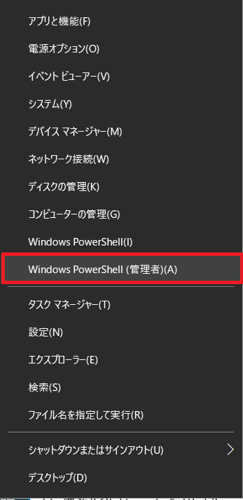
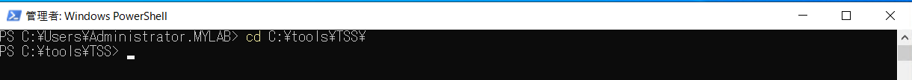
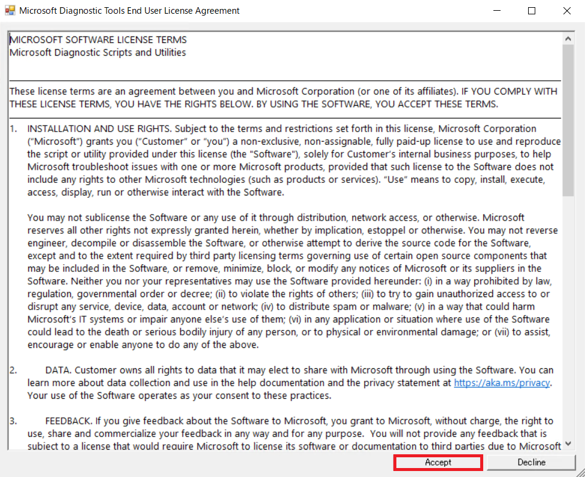
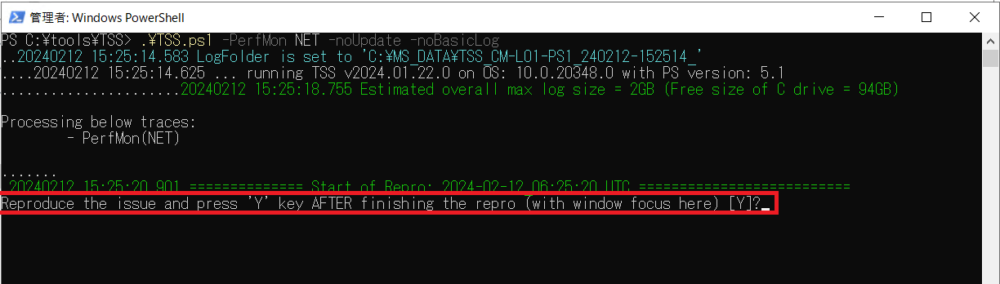
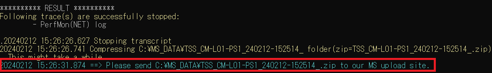

パフォーマンス ログの採取 (TSS 版)
パフォーマンス ログを採取いただくことで、現象発生時のシステム パフォーマンスの状況を確認することが可能になります。
注意事項
様々なパフォーマンス情報を取得するため、採取時簡に応じて、資料の容量サイズが大きくなります。 10GB 程度の空き容量を用意して頂くことを推奨します。
採取対象
採取対象については担当者がご案内いたします。
手順
以下の URL からダウンロードした TSS.zip を採取対象の端末に複製します。
https://aka.ms/getTSS複製したファイルを端末上の任意のパスに展開します。
※以下は展開例です。
Windows PowerShell を管理者として起動します。
起動した PowerShell コンソールで以下のコマンドを実行し、PowerShell スクリプトを実行できるように、実行ポリシーを変更します。なお、本実行ポリシーは開いた Powershell コンソール内のみで有効となります。
1 | Set-ExecutionPolicy Unrestricted -Scope Process |

- TSS.zip を展開したフォルダーに移動します。
1 | cd [TSS 展開先] |

- 以下のコマンドを入力し、資料採取を準備します。
1 | .\TSS.ps1 -PerfMon NET -noUpdate -noBasicLog |
使用許諾の確認が以下のように表示される場合は内容をご承諾頂いた上で [Accept] ボタンをクリックし同意頂きますようお願い致します。
資料は標準では C:\MS_DATA フォルダに保存されます。 保存先を変更されたい場合は、下記のように -LogFolderPath オプションを付与ください。
1
.\TSS.ps1 -PerfMon NET -noUpdate -noBasicLog -LogFolderPath D:\MS_DATA
- 実行後、以下のように Reproduce the issue and press ‘Y’ key AFTER finishing the repro (with window focus here) [Y]? と聞かれます。

担当者より指示された事象を再現させます。
再現したら、Reproduce the issue and press ‘Y’ key AFTER finishing the repro (with window focus here) [Y]? と聞かれている画面で [Y] を入力します。資料採取が開始されます。
- 以下の赤枠部分のように表示されれば採取完了です。実行結果に表示されているファイルを弊社までお寄せください。

TSS に関する FAQ
TSS に関してよく頂くご質問について、下記にまとめておりますので適宜ご参照ください。(弊社 Windows サポートチーム 資料採取案内ページへのリンクとなっております)